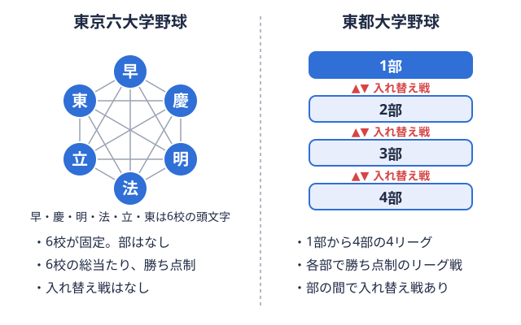
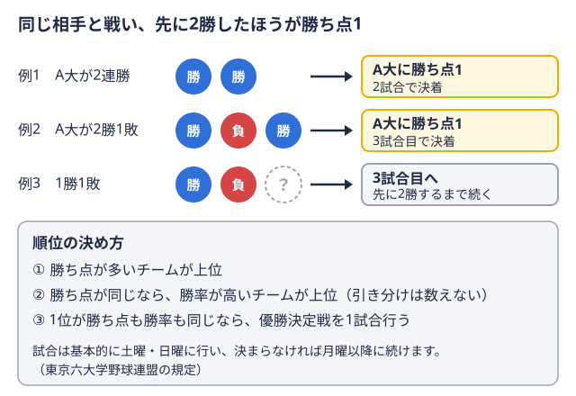

栄養・食事 2026-10-20
野球部の食事メニューと増量の進め方｜大学野球部員向けガイド
「体重を増やしたいのに、食べても思うように増えない」「寮の食事だけでは足りない気がする」。大学野球部で体づくりに取り組む部員や、これから入部する高校生の中には、こうした悩みを持つ人も多いのではないでしょうか。増量というと「とにかくたくさん食べる」というイメージが先行しがちですが、体重の増え方の中身（筋肉か脂肪か）や、食べる時間帯、リーグ戦のスケジュールとの兼ね合いによって、同じ食事量でも結果は変わる場合があります。
この記事では、大学野球部員が増量に取り組むときの食事の考え方を、公的な基準やスポーツ栄養の専門家の発言を出典として整理します。そのうえで、寮生活・一人暮らしといった生活環境別の工夫や、春季・秋季の2シーズン制に合わせた増量時期の置き方を紹介します。なお、体重・体脂肪の適正値や必要な摂取量は、体格、ポジション、練習量、体質によって大きく異なります。持病やアレルギーがある場合、体調に不安がある場合は、チームのトレーナーや医師、管理栄養士などの専門家に相談したうえで進めてください。
増量の目的は「体重」ではなく「動ける体を大きくすること」
増量の相談でよく話題になるのは、体重の数字そのものです。しかし、野球は打つ・投げる・走るといった瞬発的な動作を繰り返す競技であり、体重が増えても動きが重くなったり、疲れやすくなったりしては、増量した意味が薄れてしまいます。目指すのは、筋肉量を中心に体を大きくし、パフォーマンスにつなげることです。
筋肉を増やすには、トレーニングによる刺激、十分なエネルギー、材料となるたんぱく質、そして休養の4つが揃うことが基本になります。このうち食事が担うのはエネルギーとたんぱく質の部分です。食事が足りないままトレーニングを増やすと、体重が増えにくいだけでなく、疲労がたまりやすくなる場合もあります。トレーニングの考え方については、大学野球 投手の球速アップトレーニングでも、シーズンの節目に土台づくりへ重心を移す視点を紹介しています。
たんぱく質はどのくらい必要か——公的基準と専門家の目安
増量で最も話題になるのがたんぱく質の量です。まず、一般の成人の基準として、厚生労働省の「日本人の食事摂取基準（2025年版）」策定検討会報告書に、年齢・性別ごとのたんぱく質の推奨量が示されています。18〜64歳の男性の推奨量は1日65gとされていますが、これは日常生活を送る一般の人を想定した値で、日々の練習で体を動かし、さらに増量を目指す運動部員にそのまま当てはまるとは限りません。
運動をする人については、複数の目安があります。
- 米国スポーツ医学会などによる2016年の共同声明では、アスリートの1日のたんぱく質摂取量は体重1kgあたり1.2〜2.0gの範囲で、トレーニングの種類や強度、鍛えられている度合いによって変わるとされています（ACSM Position Stand: Nutrition and Athletic Performance）。
- 立命館大学スポーツ健康科学部の海老久美子教授（公認スポーツ栄養士・管理栄養士）は、海外の研究では運動選手で体重1kgあたり1.6〜1.7g、日本のジュニアアスリートでは体重1kgあたり2gが目安とされていると述べています。体重60kgの選手の場合、1日120gの計算です（明治 スポーツ栄養の記事）。
たとえば体重70kgの部員が体重1kgあたり1.6〜2.0gを目安にするなら、1日あたり約112〜140gという計算になります。ただし、これは「必ずこの量を食べなければならない」という意味ではなく、あくまで目安です。腎機能に不安がある場合など、たんぱく質を増やすことが適さない場合もあるため、サプリメントやプロテインで大幅に増やそうとする前に、専門家へ相談することをおすすめします。
「3食を増やす」より「食べる回数を増やす」考え方
増量がうまくいかない理由として、1回の食事量を増やそうとして食べきれなくなる、食後の練習で気持ち悪くなる、といったことがあります。そこで有効とされるのが、3食の量を無理に増やすより、補食（間食）を足して食べる回数で摂取量を稼ぐ考え方です。
前出の海老教授は、不足しがちなたんぱく質を間食で補うことは、体づくりやコンディション調整、パフォーマンス発揮のための有効な手段になると述べています。また、朝食をアスリートの食事の「先手必勝」策として位置づけています。起床後に何も食べずに授業や朝練習に向かうと、その分だけ一日の摂取量の機会を失うことになるため、朝の1食は増量を考えるうえで見逃しにくいポイントです。
補食に向く食品の例
補食は、練習の前後や授業の合間に手軽にとれるものが続けやすく、次のような食品が使われています。
- おにぎり、パックご飯、切り餅、バナナなど、エネルギー源になる主食系
- ゆで卵、牛乳、ヨーグルト、チーズ、サラダチキン、納豆巻きなど、たんぱく質を補える食品
- 100%果汁ジュースやドライフルーツなど、食欲がないときでも口にしやすいもの
「何を食べるか」よりも、「毎日続けられる形にできるか」が現実的な基準になります。特定の食品だけで増量が決まるわけではなく、コンビニで買えるものを組み合わせるだけでも補食は成立します。
練習の前後をどう使うか
練習の直前に大量に食べると、胃の不快感につながる場合があります。練習の2〜3時間前までに食事を済ませ、直前は消化のよい軽い補食にとどめる、練習後はなるべく早めに主食とたんぱく質をとる、といった組み立てが一般的な考え方です。自分の消化の癖には個人差が大きいため、シーズン中に初めて試すのではなく、オフの練習で自分に合うタイミングを確かめておくと安心です。
一日の食事の組み立て例（体重70kg・大学の授業日を想定）
以下は、授業と夕方の全体練習がある日を想定した「組み立ての一例」です。分量や総エネルギーは個人差が大きいため、あくまで食べる回数と内容のイメージとして読んでください。
| 時間帯 | 食事・補食 | ねらい |
|---|---|---|
| 朝（起床後） | ごはん、卵、味噌汁、納豆、牛乳またはヨーグルト | 一日のスタートでエネルギーとたんぱく質を確保する |
| 午前の授業の合間 | おにぎり1〜2個、バナナ | 昼食までのエネルギー不足を防ぐ |
| 昼 | 主食・主菜・副菜がそろう定食（学食） | 肉や魚を主菜にして、野菜や汁物も添える |
| 練習の前（夕方） | もち、パックご飯、パン、果汁ジュースなど | 練習で使うエネルギーを消化のよい形で入れる |
| 練習の後 | おにぎり、サラダチキン、牛乳など | 疲労回復と筋肉の材料を早めに補給する |
| 夕食 | 主食を多めにした定食（肉・魚・野菜） | 一日の不足分を補う中心の食事 |
| 就寝前（食欲があれば） | ヨーグルト、チーズなど軽いもの | 無理のない範囲でたんぱく質を足す |
この例では、1日6〜7回に分けて食べる形になっています。ただ、すべてを毎日そろえる必要はありません。授業の時間割や練習時間に合わせて「抜けやすい時間帯」を見つけ、そこに補食を1回足すところから始めると、続けやすくなります。
生活環境別の工夫——寮・実家・一人暮らし
大学野球部員の食事環境は、部の寮に入っている、実家から通っている、一人暮らしをしている、と人によってさまざまです。それぞれ増量を考えるときの課題が異なります。
寮生活の場合
寮では栄養バランスの整った食事が決まった時間に出る反面、量が一律で、増量したい人にとっては主食の量が足りない場合があります。食事量が足りないと感じたときは、まず寮の担当者や管理栄養士がいれば、増量の目標を伝えて相談してみるのが近道です。そのうえで、自室に置けるパックご飯、切り餅、牛乳などを補食として足す方法があります。
実家から通う場合
家族に食事を用意してもらえる場合は、練習の帰りが遅くなる日の夕食の時間、弁当の量、補食を持たせてもらうことなどを家族と共有しておくと、増量に必要な食事が回りやすくなります。部活動と家庭の食事のペースを合わせるには、家族の協力が欠かせません。保護者との関わり方については、大学野球部の後援会・保護者会に関する記事も参考になります。
一人暮らしの場合
自炊の時間が取れず、食事が単品の丼ものや麺類に偏りやすいのが一人暮らしの課題です。この場合は、完璧な献立を目指すより、「主食・たんぱく質源・野菜（または果物）」を一日の中でそろえる意識を持つと、続けやすくなります。冷凍の肉・魚、冷凍野菜、カット野菜、レトルトの味噌汁、パックご飯など、調理の手間が少ない食材を常備すると、忙しい日でも食事の質を保ちやすくなります。食費については、遠征費や用具費を含めた全体の負担を用具の費用に関する記事などで把握しておくと、予算の見通しが立てやすくなります。
大学野球のシーズン構造に合わせた増量の時期設計
高校野球と大きく異なる点として、大学野球は春季・秋季の年2シーズン制でリーグ戦を戦います。東京六大学野球は6校総当たりリーグの全チームが、ほかのすべてのチームと対戦する方式。東京六大学では6校がそれぞれ他の5校と戦う。  
リーグ戦中は「増やす」より「落とさない」
リーグ戦の期間は、週末ごとの試合に向けてコンディションを整える時期です。この時期に意欲的に増量を狙って食事の内容を大きく変えると、体が重く感じられたり、胃腸の調子を崩したりする場合があります。リーグ戦中は、体重を急に増やすことよりも、これまでの食事リズムを保ち、試合の前後に主食を確保して体重を落とさないことを優先する考え方があります。
増量に向く時期はシーズンの節目
リーグ戦の終了後から次のシーズンに入るまでの期間は、試合の負荷が相対的に小さく、トレーニングで筋力を高める取り組みを進めやすい時期です。食事を増やして体を大きくするのにも、比較的向いた時期と考えられます。秋季リーグ戦の終盤から終了後にあたる今の時期は、この冬の過ごし方を考え始めるタイミングです。
増量を計画的に進めるなら、次の流れで考えると整理しやすくなります。
- 現在の体重・体脂肪の状況を記録する（週1回、同じ条件で測る）
- 目標体重と期間を決める（短期間で急激に増やそうとしない）
- 1日の食事に補食を1回追加する
- 2〜4週間続けて体重の推移を見る
- 増えない場合は、補食の回数や主食の量を見直す。増えすぎる場合は量を調整する
体重の増え方の目安は人によって大きく違い、一概にどれだけが正しいとはいえません。チームのトレーナーや管理栄養士、指導者と目標を共有し、体の状態を見ながら調整していくことが大切です。
増量中に気をつけたいこと
食べすぎによる体調不良と食欲の落ち込み
無理に食べ続けると、胃腸の疲れや食欲の低下につながり、結果的に続かなくなることがあります。食べるのがつらい日は、量を一時的に減らして回数を維持する、飲み物から栄養をとるなど、負担の少ない方法を選ぶ選択肢もあります。
サプリメント・プロテインとの付き合い方
プロテインや増量用サプリメントは、食事で不足する分を補う手段として使われますが、基本は食事から必要な栄養をとることです。サプリメントを使う場合は、含まれる成分や摂取量を確認し、チームの方針や、トレーナー・管理栄養士・医師の助言を踏まえて検討してください。また、成分表示が不明確な製品は避け、気になる場合は専門家に確認するなど、安全面にも注意が必要です。
ケガ・体調との兼ね合い
増量にあわせてトレーニング量を急に増やすと、肩や肘、腰などに負担がかかる場合があります。投手を中心に、登板が続きやすい大学野球の構造上、ケガのリスクは無視できません。体づくりと並行して、肩・肘のケアや登板管理も意識しておきたいところです。くわしくは野球肩・野球肘の予防に関する記事をご覧ください。
自分のリーグの試合日程を把握して計画に落とし込む
増量や食事の計画を立てるうえで、自チームがいつ試合に臨むのか、リーグ戦の山場がいつなのかを把握しておくことは役立ちます。たとえば東京六大学野球 秋季リーグの順位表や東都大学野球 1部の秋季順位表を見ることで、シーズンがどの段階にあるか、リーグ戦の終了後にどのくらいの期間が確保できそうかを見通す材料になります。各リーグの順位表や日程の確認は、トレーニングや食事の計画を立てる際の目安として使えます。
まとめ
大学野球部員の増量は、たくさん食べることそのものより、筋肉の材料となるたんぱく質とエネルギーを無理なく継続して確保することが基本です。厚生労働省の食事摂取基準や、ACSMなどの共同声明、スポーツ栄養士の目安を参考にしつつ、実際の量は体格や練習量に応じて調整する必要があります。
具体的な進め方としては、3食に補食を足して食べる回数を増やす、練習前後の食事のタイミングを自分に合わせる、寮・実家・一人暮らしといった生活環境に応じた工夫をする、リーグ戦中は体重を落とさないことを優先し、シーズンの節目に増量を進める、という流れが整理しやすいでしょう。体重の増え方は個人差が大きいため、記録をつけながら、トレーナーや管理栄養士、指導者と相談して調整していくことが大切です。
出典
この部活・競技を応援したい方へ
協賛・応援はこちらから。
取材してほしい部活を募集中
あなたの部活・チームを取材してほしい方はこちらから。
オフシーズン・引退後に、長期インターンという選択
部活で培った力を実務で試す。16タイプ診断（30秒）で合う企業がわかります。